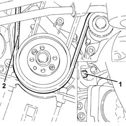
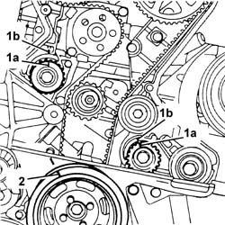
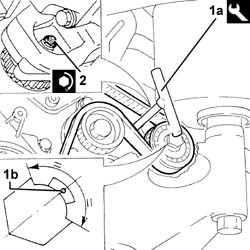

1092E10 counter-rotating shaft drive toothed belt - r + r
- Path
- Procedures > 10 ENGINE > 1092 VARIOUS ENGINE COMPONENT CONTROLS > 1092E counter-rotating shaft drive > 1092E10 counter-rotating shaft drive toothed belt - r + r
- Kind
- repair procedure (removal / refitting; the operation number is the code)
- Applies to
- engines: 2.0 TS; all production periods
- Interactive page
- https://sloeber94.github.io/elrnDB-a147/en/#/3024940
Applies to: engines: 2.0 TS; all production periods
 Removing
Removing
 Refitting
RefittingPosition the vehicle on the ramp.
Proceed with the removal 4450B10 Front WHEEL (one) - R.R. (Right side).
Proceed with the removal 7055B54 under-engine guard - r r .
Proceed with the removal 7055B64 Engine compartment DUST shield in front wheel arch (one), left or right - R.R. (Right side).
Proceed with the removal 1092G10 single engine belt r r .
Proceed with the removal 1092A10 Crankshaft services PULLEY - R.R. .
Proceed with the removal 1092G20 engine component single belt fixed tensioner - one - r + r .
Proceed with the removal 1092G14 engine component single belt mobile tensioner - r + r .
Proceed with the removal 1032D12 timing system protective cover(s) - r + r .
1. Loosen the nut for the counter-balance shaft toothed drive belt tensioner.
2. Remove the counter-balance shaft drive belt.

Applies to: engines: 2.0 TS; all production periods
Refitting
Removing1. Rotate the counter-balance shafts so that the references (1a) on the pullies are aligned with the ribs (1b).
2. Temporarily fit the lower timing cover and the crankshaft pulley and check the alignment of the references.
Fit the counter-balance shaft toothed drive belt.

Applies to: engines: 2.0 TS; all production periods
1. Tension the counter-balance shaft drive belt using the tool (1a) so that the reference opening (1b) in the belt tensioner is at the centre of the rotation sector.
 | Name | Country |
|---|---|---|
1a | Key | 1.822.154.000 |
2. Tighten the nut fixing the counter-balance shaft drive belt tensioner to the recommended torque.
 | Fastening | Component | Ø | Value (daNm) |
|---|---|---|---|---|
2 | Nut | COUNTER-ROTATING SHAFT BELT TENSIONER | M6 | (.Left. counter balance shaft front) cover side 0.8÷1.0 |

Applies to: engines: 2.0 TS; all production periods
Proceed with the refitting 1032D12 timing system protective cover(s) - r + r .
Proceed with the refitting 1092G14 engine component single belt mobile tensioner - r + r .
Proceed with the refitting 1092G20 engine component single belt fixed tensioner - one - r + r .
Proceed with the refitting 1092A10 Crankshaft services PULLEY - R.R. .
Proceed with the refitting 1092G10 single engine belt r r .
Proceed with the refitting 7055B64 Engine compartment DUST shield in front wheel arch (one), left or right - R.R. (Right side).
Proceed with the refitting 7055B54 under-engine guard - r r .
Proceed with the refitting 4450B10 Front WHEEL (one) - R.R. (Right side).
Remove the car from the ramp.
Topics linked from this page (8)
- 1032D12 timing system protective cover(s) - r + r
- 1092A10 Crankshaft services PULLEY - R.R.
- 1092G10 single engine belt r r
- 1092G14 engine component single belt mobile tensioner - r + r
- 1092G20 engine component single belt fixed tensioner - one - r + r
- 4450B10 Front WHEEL (one) - R.R.
- 7055B54 under-engine guard - r r
- 7055B64 Engine compartment DUST shield in front wheel arch (one), left or right - R.R.
Topics that link to this page (19)
- 0010M20 120,000km service coupon, emission control versions
- 1008C19 engine link mount - r r
- 1016C10 cylinder head - r + r and replace gasket
- 1020D18 front crank shaft cover oil seal - replace
- 1020E10 oil seal cover (one) - l or r - on counter-rotating shafts - r + r and replace seals
- 1020E20 front oil seal of one counter-rotating shaft, l or r - r + r
- 1028H10 connecting rod and piston set - r r
- 1032B10 toothed timing belt - r + r for timing adjustment or replacement
- 1032B46 toothed drive pulley - r + r
- 1032B52 toothed driven pulley (one) - r + r
- 1032C18 mobile timing system tensioner - r + r for 24 valve engines
- 1032C32 fixed timing system tensioner (one) r + r
- 1036C10 camshaft in cylinder head - r r on vehicle
- 1056B51 cam angle sensor r + r
- 1088C10 water pump - r + r
- 1092E16 counter-rotating shaft drive toothed belt tensioner - r + r
- 1092E22 counter-rotating shaft drive toothed belt drive pulley - r + r
- 1092E26 counter rotating shaft pulley - r + r
- 4130B32 power steering pump mount - r r